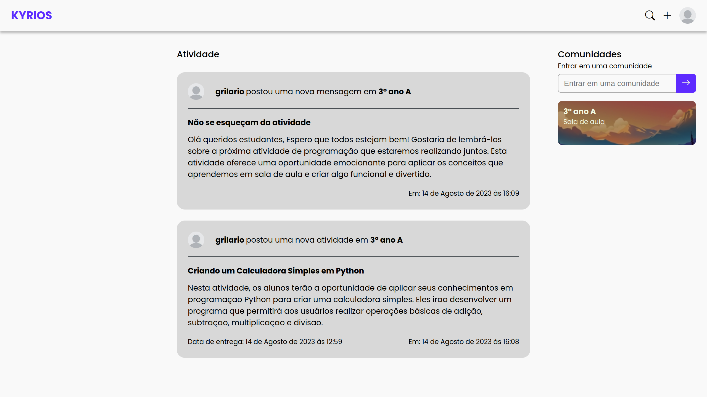

LF
Olá me chamo Luis Fernando! Conheci o mundo da tecnlogia quando tinha 15 anos quando entrei para no curso em Téncnico em Informática e desde então não parei mais de estudar sobre a área, atualmente entou cursando Engenharia de Software na Uninter
Formação

Bacharelado em Engenharia de Software
Centro Universitário Internacional Uninter
- Modelagem de sistemas, Levantamento de requistos, UML
- Bancos de Dados, SQL, Modelo entidade relacionamento
- Processos e Métodos Ágeis
Tecnólogo em Análise e Desenvolvimento de Sistemas
Instituto Federal Baiano - Campus Guanambi
- Unidades binárias e suas conversões: Bit, Bytes, Megabytes
- Sistemas de informação SPT, SIG, SAD
Técnico em Informática para Internet
Instituto Federal Baiano - Campus Guanambi
- Construção de Websites utilizando HTML, CSS, Javacript
- Desenvolvimento de sistemas utilizando Python e Django
- Modelagem de banco de dados, liguagem SQL
Portfolio

Kyrios GIT
- Desenvolvimento de sistema utilizando Python e Django
- Gerenciamento, visualização de repositórios GIT
- Redimensionamento de imagens utilizando Pillow

Sylla
- Redimensionamento de vídeos usando FFmpeg
- Checagem de conteúdo impróprio usando NSFW.js
- Streaming de videos
- Sistema de buscas usando Postgres Full Text Search